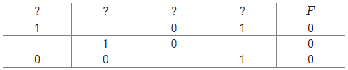

На рисунке справа схема дорог Н-ского района изображена в виде графа, в таблице содержатся
сведения о длинах этих дорог (в километрах). Так как таблицу и схему рисовали независимо друг от
друга, то нумерация населённых пунктов в таблице никак не связана с буквенными обозначениями на
графе. Определите длину самого длинного пути из пункта А в пункт Ж, если по каждой дороге можно
пройти только один раз, а каждый город можно посетить любое количество раз, включая начальный и
конечный.
1
На рисунке слева схема дорог Н-ского района изображена в виде графа, в таблице содержатся
сведения о длинах этих дорог (в километрах). Так как таблицу и схему рисовали независимо друг от
друга, то нумерация населённых пунктов в таблице никак не связана с буквенными обозначениями на
графе. Определите длину дороги из М в Д, если известно, что длина дороги из Б в Е равна 10. В
ответе запишите целое число – длину дороги в километрах.
1
На рисунке схема дорог Н-ского района изображена в виде графа, в таблице содержатся сведения о
протяжённости каждой из этих дорог (в километрах). Так как таблицу и схему рисовали независимо
друг от друга, то нумерация населённых пунктов в таблице никак не связана с буквенными
обозначениями на графе. Определите длину кратчайшего пути из пункта Д в пункт Г. В ответе
запишите целое число.
На рисунке справа схема дорог Н-ского района изображена в виде графа, в таблице содержатся
сведения о длинах этих дорог (в километрах). Так как таблицу и схему рисовали независимо друг от
друга, то нумерация населённых пунктов в таблице никак не связана с буквенными обозначениями на
графе. В таблице в левом столбце указаны номера пунктов, откуда совершается движение, в первой
строке – куда. Определите сумму длин дорог CB, CG и CE. Передвигаться можно только по указанным
дорогам.
На рисунке схема дорог Н-ского района изображена в виде графа, в таблице содержатся сведения о
длине этих дорог в километрах. Так как таблицу и схему рисовали независимо друг от друга,
нумерация населённых пунктов в таблице никак не связана с буквенными обозначениями на графе.
Известно, что длина дороги ЗЕ равна 15 км. Определите длину дороги БГ. В ответе запишите целое
число – длину дороги в километрах.
1
Для кодирования букв А, Б, В, Г, Д, Е, Ж, З, И, использован неравномерный троичный код,
удовлетворяющий условию Фано. Для буквы А используется кодовое слово 0; для буквы Б используется
кодовое слово 10; для буквы В используется кодовое слово 11; для буквы Г используется кодовое
слово 21; для буквы Д используется кодовое слово 22. Какова минимальная общая длина кодовых слов
для букв Е, Ж, З, И?
1
По каналу связи передаются сообщения из букв слова ГОРЕСТЬ. Для передачи используется двоичный
код, удовлетворяющий условию Фано. Это условие обеспечивает возможность однозначной расшифровки
закодированных сообщений. Для букв С, Е, Т, Ь используются кодовые слова 1, 0110, 01110, 011111,
соответственно. Какое количество двоичных знаков потребуется для кодирования слова ГОРСТЬ, если
известно, что оно закодировано минимально возможным количеством двоичных знаков?
Примечание: под условием Фано понимается такой метод кодирования, при котором ни одно кодовое
слово не является началом другого кодового слова. Такой способ кодирования позволяет получить
однозначно декодируемый код.
1
По каналу связи передаются сообщения, содержащие только семь букв: Р, Е, К, У, С, И, Я. Для
передачи используется двоичный код, удовлетворяющий условию Фано. Кодовые слова для букв
известны: Р - 1001, Е - 1010, К - 1011, У - 1100, С - 1101, И - 1110, Я - 1111. Как можно
сократить код для буквы Р, чтобы сохранялось свойство однозначности декодирования? Если таких
кодов несколько, в качестве ответа указать код наименьшей длины.
Примечание: условие Фано означает, что ни одно кодовое слово не является началом другого
кодового слова.
1
По каналу связи передаются сообщения, содержащие только буквы из набора: А, Г, Е, Н, Т. Для
передачи используется двоичный код, удовлетворяющий прямому условию Фано. Это условие
обеспечивает возможность однозначной расшифровки закодированных сообщений. Кодовые слова для
некоторых букв известны: Г - 01, Е - 100, Т - 101. Для двух оставшихся букв А и Н кодовые слова
неизвестны. Какое количество двоичных знаков потребуется для кодирования слова ТАГАНЕГ, если
известно, что оно закодировано минимально возможным количеством двоичных знаков?
Примечание: под условием Фано понимается такой метод кодирования, при котором ни одно кодовое
слово не является началом другого кодового слова. Такой способ кодирования позволяет получить
однозначно декодируемый код.
1
Исполнитель Черепаха действует на плоскости с декартовой системой координат. В начальный момент
Черепаха находится в начале координат, её голова направлена вдоль положительного направления оси
ординат, хвост опущен. При опущенном хвосте Черепаха оставляет на поле след в виде линии. В
каждый
конкретный момент известно положение исполнителя и направление его движения. У исполнителя
существует две команды: Вперёд n (где n — целое число), вызывающая передвижение Черепахи на n
единиц в том направлении, куда указывает её голова, и Направо m (где m — целое число),
вызывающая
изменение направления движения на m градусов по часовой стрелке. Запись
Повтори k [Команда1 Команда2 … КомандаS]
означает, что последовательность из S команд повторится k раз. Черепахе был дан для исполнения
следующий алгоритм:
Повтори 6 [Вперёд 13 Направо 120]
Определите, сколько точек с целочисленными координатами будут находиться внутри области,
ограниченной линией, заданной данным алгоритмом. Точки на линии учитывать не следует.
1
Сколько существует девятеричных пятизначных чисел, содержащих в своей записи ровно одну цифру 5,
в
которых никакие две одинаковые цифры не стоят рядом?
1
Прибор автоматической фиксации нарушений правил дорожного движения делает цветные фотографии
размером 1280х1024 пикселей, используя палитру из 1024 цветов. Снимки сохраняются в памяти
камеры,
группируются в пакеты по 220 шт., затем передаются в центр обработки информации со скоростью
передачи данных 12 582 912 бит/с. Сколько секунд требуется для передачи одного пакета
фотографий? В
ответе запишите целую часть полученного числа.
1
Логическая функция
F задаётся выражением
y
∧
(
x
V
z
)
V
¬
(
y
V
z
)
V
w
. На рисунке приведён частично заполненный фрагмент таблицы истинности функции
F, содержащий неповторяющиеся строки. Определите, какому столбцу таблицы истинности
соответствует
каждая из переменных
w,x,y,z. В ответе напишите буквы
w,x,y,z в том порядке, в котором идут соответствующие им столбцы. Буквы в ответе пишите подряд,
никаких разделителей между буквами ставить не нужно.

1
Рождественский эльф по каналу связи передает Санта-Клаусу зашифрованное сообщение, содержащее
только
шесть букв: А, Д, И, М, Н, Р. Для передачи используется неравномерный двоичный код,
удовлетворяющий
условию Фано. Для букв Д, Р и И используются кодовые слова 0, 11, 101 соответственно.
Какое количество двоичных знаков потребуется для кодирования слова МАНДАРИН, если известно, что
оно
закодировано минимально возможным количеством двоичных знаков?
Примечание. Условие Фано означает, что никакое кодовое слово не является началом другого
кодового
слова. Это обеспечивает возможность однозначной расшифровки закодированных сообщений.
1
Автомобильный номер состоит из одиннадцати букв русского алфавита A, B,C, E, H, K, M, O, P, T, X
и
десятичных цифр от 0 до 9. Каждый номер состоит из двух букв, затем идет 3 цифры и еще одна
буква.
Например, АВ901С.
В системе каждый такой номер кодируется посимвольно, при этом каждая буква и каждая цифра
кодируются
одинаковым минимально возможным количеством бит.
Укажите, сколько бит на один номер можно сэкономить, если кодировать с помощью одинакового
минимально возможного количества бит каждую из трех групп – первые две буквы, три цифры и
последняя
буква.